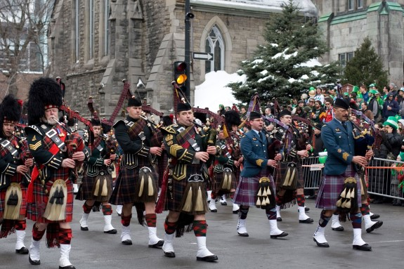
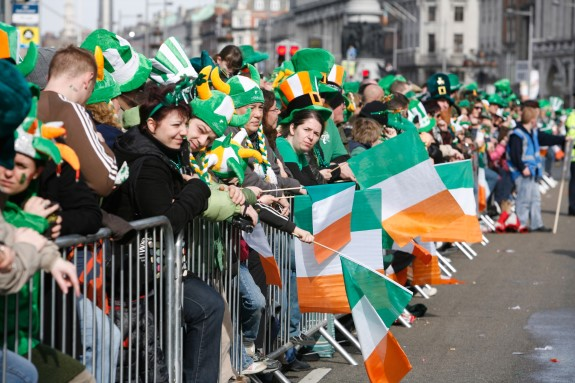
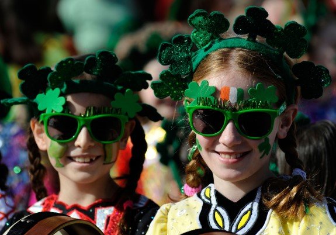

안녕하세요? 오늘은 세인트 페트릭 데이에 대하여 알아보겠습니다.
세인트 패트릭 데이(St. Patrick’s Day)는 아일랜드의 수호성인 세인트 패트릭이 세상 을 떠난 날인 3월 17일에 아일랜드를 비롯해 세계 곳곳에서 패트릭 성인을 기리며 열리는 축제다. 이날 아일랜드계 이주민들 이 많이 사는 미국, 영국, 캐나다를 포함해 아르헨티나, 오스트레일리아, 뉴질랜드 등지에서도 여러 행사가 개최된다.즉 세인트 패트릭 데이는 아일랜드에 기 독교를 전파한 패트릭 성인을 기념하는 종교 축제일뿐 아니라 아일랜드 민족으로서의 정체성과 그들의 문화를 확인하는 민족 축제이기도 한 것이다.
일찍이 9~10세기경부터 시작된 것으로 알려져 있는 세인트 패트릭 데이에는 패 트릭 성인의 형상으로 만든 큰 인형을 중심으로 대규모 거리 행진이 펼쳐진다 .아일랜드 전통 악기인 백파이프 연주단과 지역 주민으로 구성된 악단이 행진 을 함께하며 축제 분위기를 돋운다. 사람들은 아일랜드 전통 의상을 입거나 녹 색 옷과 녹색 장신구로 치장하고 거리에 나서는데, 녹색이 패트릭 성인을 상징 하는 색깔이기 때문이다. 축제 기간에는 사람들의 의상뿐 아니라 거리 곳곳의 장식물과 축제 음식까지 모두 녹색을 띠는 것이 특징이다.
패트릭 성인은 385년경 잉글랜드의 부유한 집안에서 태어났다. 당시 잉글랜드는 로마의 지배를 받고 있었으며, 로마 정부의 관료로 일한 부친 덕분에 패트릭은 풍족한 환경에서 자랄 수 있었다. 하지만 그는 열여섯 살이 되던 해에 켈트족 해적에게 납치돼 아일랜드로 끌려가 고 말았다. 당시 문명화된 로마인들의 기준으로 보면 아일랜드와 스코틀랜 드 지역에 거주하던 켈트족은 야만인이나 다름없었다.정확히 어느 곳인지 밝혀지지는 않았으나, 패트릭은 끌려간 곳 에서 양치기 노예로 일했다고 전한다. 그러던 어느 날 꿈에서 “네 양들이 준비됐다”는 목소 리를 들은 패트릭은 이를 계기로 배를 타고 탈출해 서 유럽을 돌며 사제가 되기 위한 공부를 시작했다. 사제가 된 패트릭은 신의 계시를 받고 켈트족에게 기독교를 전파하기 위해 아일랜드로 돌아갔는데, 이때가 432년이었다. 당시 로마 교황청에서는 켈트족에 대한 선교는 불가능한 것으로 여기고 있었다. 그러나 패트릭은 아일랜드 원주민에 대한 편견에 굴하지 않고 이들에게 기독교를 전파 했다. 노예로 지내면서 배운 켈트족의 언어와 문화를 기반으로 자연스럽게 사람들과 교제할 수 있었기 때문이었다. 그때까지 켈트족은 태양과 땅 등 자연을 숭배하는 드 루이드교(druidism)를 믿었는데, 패트릭은 이들에게 예수를 소개하면서 태양을 관통 하며 태양보다 더욱 큰 십자가의 이미지(이 십자가가 바로 가로축보다 세로축이 더 길고 가운데 원이 있는 켈트 십자가(celticcross)다)를 겹치게 함으로써 새롭고 강력 한 종교를 전파했다.
성경 속 인물에 대해서도 그는 이야기를 좋아하는 켈트인들의 성향에 맞춰 무용담과 영웅들의 이야기처럼 생생하게 들려주었다. 전하는 이야기에 따르면 하느님의 교의 인 삼위일체(三位一體; 성부(聖父) · 성자(聖子) · 성령(聖靈)의 세 위격(位格)이 동일한 본질을 공유하고 하나의 실체인 하느님이라는 교의)를 설명할 때도 잎이 세 개인 토끼풀(shamrock)에 비유해 이해를 도왔다고 한다. 즉 아버지와 아들과 성령이 패트릭이 기독교를 전파한 지 30년이 지난 461년 3월 17일, 그는 아일랜드의 다운패트 릭(Downpatrick)에서 숨을 거뒀다. 이후 패트릭 성인은 중세 시대의 가장 독보적인 선교사로서 널리 인정받으며 아일랜드 기독교에서 가장 존경 받는 인물이 됐다.
세인트 패트릭 데이의 가장 큰 특징은 녹색 옷과 녹색 모자, 그리고 녹색 리본을 착용하는 것이다. 녹색은 패트릭 성인이 아일랜드 이교도들에게 기독 교의 삼위일체를 설명하기 위해 토끼풀을 사용한 일 화가 널리 퍼지면서 패트릭 성인을 상징하는 색깔로 자리 잡았다. 또 아일랜드 국기에 녹색이 들어 있는 점도 영향을 미쳤다. 따라서 매년 3월 17일에 아일랜드의 거리는 온통 녹색 물결을 이룬다. 도시에서는 강물에 녹색 물감을 풀고 건물에 녹색 조명을 비춘다. 녹색으로 치장한 주민과 관광객들은 음식과 술, 음료도 녹색으로 만들어 먹는다. 축제에서 주로 먹는 아일랜드 전통 요리로는 콘 비프와 캐비지(corn edbeefandcabbage: 소고기에 양배추와 감자, 당근을 넣고 뭉근하게 끓 인 음식),소다 브레드(sodabread), 셰퍼드 파이(Shepherd’spie: 다진 고기를 으깬 감자로 감싸 구운 파이) 등이 있다.
① 아일랜드아일랜드에서는 세인트 패트릭을 아일랜드의 수호성인으로 여기는 만큼 매년 3월 17일을 교회의 축일이자 국가 공휴일로 지정해 경축하고 있다 . 따라서 아일랜드 전역에서 세인트 패트릭 데이 전후 5일 동안 축제를 벌이 며 대규모 퍼레이드 행사를 개최한다. 수도 더블린에서 펼쳐지는 퍼레이드가 가장 유명하지만, 그 밖에 성 패트릭이 사후 묻혔다고 전해지는 다운패트릭 에서도 일주일간 성대한 기념 행사가 펼쳐진다. ② 캐나다캐나다 퀘벡(Quebec) 주에는 아일랜드 이민자들이 많이 거주하고 있다 . 아일랜드의 대기근을 피해 캐나다로 이주해온 초기 이주민들이 낯선 땅에서의 고난을 극복하고 공동체의 번성을 축하하기 위해 패트릭 성인을 기리며 축제를 벌인 것이 캐나다의 세인트 패트릭 축제의 시작이었다. 처음에는 아일랜드 사람 들만의 축제이던 세인트 패트릭 데이는 이제 몬트리올 시민 모두가 함께 즐기는 축제로 발전했다. 세인트 패트릭 데이가 되면 매년 몬트리올에서는 북아메리카에 서 가장 큰 규모의 세인트 패트릭 데이 퍼레이드가 펼쳐진다. 1824년에 처음 시 작된 이 퍼레이드는 아일랜드 더블린의 세인트 패트릭 데이 퍼레이드보다 역사가 더 오래됐다.
